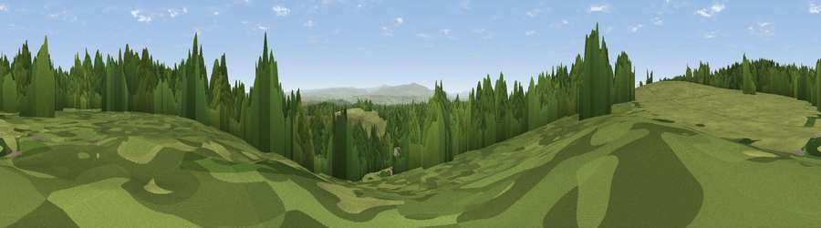

Viewpoint near Bewcastle
#37561 in England · top 85% of its area beats it · near BewcastleWhere it is
The exact computed spot (NY 61075 74775). Click the marker for map links.
The view, rendered

A 360° render of this exact spot computed from the terrain model, tree cover and land cover — summer colours, afternoon light, calibrated against photographs of famous viewpoints. Real trees, hedges and buildings will differ in detail.
The panorama
Grey silhouette: terrain skyline in each direction (720 bearings, Earth curvature and refraction included). Dashed green: skyline with trees (+15 m) and buildings (+8 m) as obstacles. Blue strip: how far the ground is visible on each bearing.
Where the view opens
Wedge length = distance to the farthest visible ground on that bearing (vegetation-aware). Rings at 10, 25 and 50 km.
What fills the view
57% grassland · 43% woodland
Angular shares of the visible panorama (visual magnitude), not map area. Landscape diversity 0.31 (0–1 Shannon).
Key numbers
More beautiful places nearby
The staircase of upgrades: each row has a higher view potential than everything closer. Driving times are estimates from straight-line distance, calibrated against real road routing — check an actual route before setting out.
| Place | Direction | Drive | Score |
|---|---|---|---|
| Viewpoint near Bewcastle | WNW · 0 km | ~2 min | 46.2 |
| Viewpoint c11498_7270 | E · 2 km | ~6 min | 63.0 |
| Viewpoint near Bewcastle | WSW · 5 km | ~10 min | 71.8 |
| Viewpoint near Bewcastle | NNW · 5 km | ~11 min | 78.9 |
| Viewpoint c11644_7156 | NNW · 8 km | ~16 min | 80.8 |
| Viewpoint c11995_7247 | N · 25 km | ~41 min | 82.1 |
| Viewpoint near Hepple | ENE · 47 km | ~68 min | 82.4 |
| Viewpoint c12273_7856 | NE · 50 km | ~71 min | 83.7 |
55.06591, -2.61102 · source: screening · position refined by local search. Computed location — check access rights before visiting.